Introduccion
GitHub proporciona una plataforma para desarrolladores impulsada por IA para crear, escalar y entregar software seguro. Ya sea para planificar nuevas características, corregir errores o colaborar en los cambios, GitHub es el lugar donde más de 100 millones de desarrolladores de todo el mundo se reúnen para crear cosas y hacerlas aún mejor.
En este módulo, aprenderás los conceptos básicos de GitHub y obtendrás una mejor comprensión de sus características fundamentales con un ejercicio práctico, todo dentro de un repositorio de GitHub.
Objetivos de aprendizaje
En este módulo:
Identificar las características fundamentales de GitHub.
Aprenderás sobre la gestión de repositorios.
Comprender el flujo de GitHub, incluyendo ramas, commits y pull requests.
Explorar las características de colaboración de GitHub mediante la revisión de problemas y discusiones.
Reconocer cómo gestionar tus notificaciones y suscripciones de GitHub.
¿Qué es GitHub?
En esta unidad, revisamos los siguientes objetivos de aprendizaje:
Breve descripción de la plataforma empresarial GitHub.
Cómo crear un repositorio.
Cómo añadir archivos a un repositorio.
Cómo buscar repositorios.
Introducción a gists y wikis.
GitHub
Es una plataforma basada en la nube que utiliza Git, un sistema de control de versiones distribuido, en su núcleo. La plataforma GitHub simplifica el proceso de colaboración en proyectos y proporciona un sitio web, herramientas de línea de comandos y un flujo general que permite a los desarrolladores y usuarios trabajar juntos.
Como hemos aprendido antes, GitHub proporciona una plataforma para desarrolladores impulsada por IA para construir, escalar y entregar software seguro. Vamos a desglosar cada uno de los pilares fundamentales de la plataforma GitHub Enterprise, IA, Colaboración, Productividad, Seguridad y Escala.
IA
La IA generativa está transformando drásticamente el desarrollo de software en estos momentos. La plataforma GitHub Enterprise está mejorando la colaboración a través de pull requests y issues impulsados por IA, la productividad a través de Copilot, y la seguridad automatizando las comprobaciones de seguridad con mayor rapidez.
Colaboración
La colaboración es el núcleo de todo lo que hace GitHub. Sabemos que una colaboración ineficiente supone una pérdida de tiempo y dinero. Contrarrestamos esto con un conjunto de herramientas que permiten la colaboración sin esfuerzo.
Repositorios, Issues, Pull Requests y otras herramientas ayudan a que desarrolladores, jefes de proyecto, líderes de operaciones y otras personas de la misma empresa puedan colaborar. Esto les permite trabajar juntos más rápido, reducir los tiempos de aprobación y realizar los envíos con mayor celeridad.
Productividad
La productividad se acelera con la automatización que proporciona la Plataforma Empresarial GitHub. Con herramientas CI/CD (Integración Continua y Entrega Continua) integradas directamente en el flujo de trabajo, la plataforma ofrece a los usuarios la posibilidad de establecer tareas y olvidarse de ellas, ocupándose de la administración rutinaria y acelerando el trabajo diario. De este modo, los desarrolladores disponen de más tiempo para centrarse en lo más importante: crear soluciones innovadoras.
Seguridad
GitHub se centra en integrar la seguridad directamente en el proceso de desarrollo desde el principio. La plataforma GitHub Enterprise incluye funciones de seguridad nativas y propias que minimizan el riesgo de seguridad con una solución de seguridad integrada. Además, tu código permanece privado dentro de tu organización. Al mismo tiempo, puedes aprovechar la visión general de la seguridad y Dependabot.
GitHub ha seguido invirtiendo para garantizar que nuestras funciones estén preparadas para la empresa. Microsoft y las industrias altamente reguladas confían en GitHub, y cumplimos con los requisitos de cumplimiento global.
Escala
GitHub es la mayor comunidad de desarrolladores de su clase, con datos en tiempo real sobre más de 100 millones de desarrolladores, más de 330 millones de repositorios e innumerables despliegues. Hemos sido capaces de entender las necesidades cambiantes de los desarrolladores y hacer cambios en nuestro producto para que coincida.
Esto se ha traducido en una escala increíble que no tiene parangón ni comparación con ninguna otra empresa del planeta. Cada día obtenemos más información de esta impresionante comunidad y hacemos evolucionar la plataforma para satisfacer sus necesidades.
En esencia, la Plataforma Empresarial GitHub se centra en la experiencia del desarrollador. Tiene la escala para proporcionar conocimientos que cambian la industria, capacidades de colaboración para la eficiencia transformadora, las herramientas para aumentar la productividad, la seguridad en cada paso, y AI para impulsar todo a nuevas alturas en una sola plataforma integrada.
Ahora vamos a entrar en la columna vertebral de GitHub, los repositorios.
Introducción a los repositorios
Hagamos primero un repaso:
¿Qué es un repositorio?
Cómo crear un repositorio
Añadir ficheros a un repositorio
Cómo buscar repositorios
Introducción a gists, wikis y páginas de GitHub
¿Qué es un repositorio?
Un repositorio contiene todos los archivos de tu proyecto y el historial de revisiones de cada archivo. Es una de las partes esenciales que te ayuda a colaborar con la gente. Puedes utilizar repositorios para gestionar tu trabajo, realizar un seguimiento de los cambios, almacenar el historial de revisiones y trabajar con otras personas. Antes de profundizar demasiado, empecemos por cómo crear un repositorio.
¿Cómo crear un repositorio?
Puedes crear un nuevo repositorio en tu cuenta personal o en cualquier organización donde tengas permisos suficientes.
Vamos a abordar la creación de un repositorio desde github.com.
En la esquina superior derecha de cualquier página, utilice el menú desplegable y seleccione New repository.
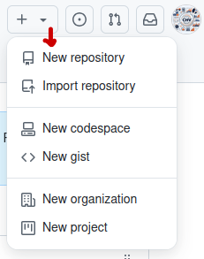
Utilice el menú desplegable Owner para seleccionar la cuenta que desea que sea la propietaria del repositorio.
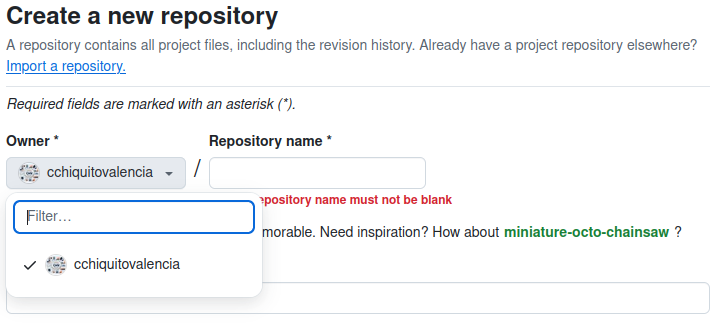
Escriba un nombre para su repositorio y una descripción opcional.Escriba un nombre para su repositorio y una descripción opcional.
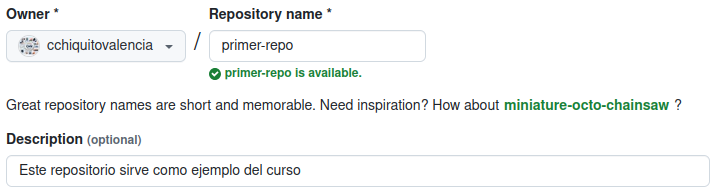
Elija una visibilidad de repositorio.
Los repositorios públicos son accesibles a todo el mundo en Internet.
Los repositorios privados sólo son accesibles para ti, para las personas con las que compartes explícitamente el acceso y, para los repositorios de organizaciones, para ciertos miembros de la organización.
Seleccione Crear repositorio y ¡enhorabuena! ¡Acaba de crear un repositorio!
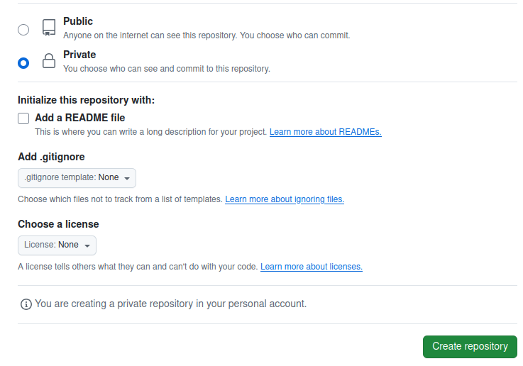
A continuación, vamos a ver cómo añadir ficheros a tu repositorio.
¿Cómo añadir un archivo a tu repositorio?
Los archivos en GitHub pueden hacer un puñado de cosas, pero el propósito principal de los archivos es almacenar datos e información sobre tu proyecto. Vale la pena saber que para añadir un archivo a un repositorio primero debes tener un acceso mínimo de Escritura dentro del repositorio al que quieres añadir un archivo.
Repasemos cómo añadir un archivo a tu repositorio.
En GitHub.com, navega a la página principal del repositorio.
En tu repositorio, navega hasta la carpeta donde quieres crear un archivo seleccionando el enlace crear un nuevo archivo o subiendo un archivo existente.
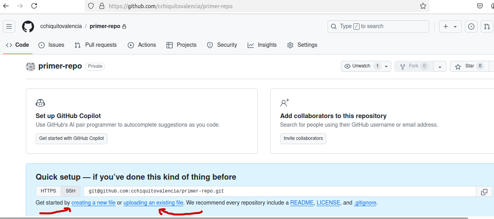
En el campo de nombre de archivo, escriba el nombre y la extensión del archivo. Para crear subdirectorios, escriba el separador de directorios /.
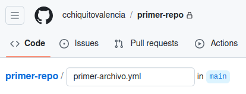
En el cuadro de texto Contenido del archivo, escriba el contenido del archivo.
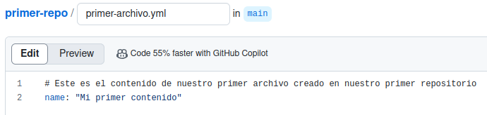
Para revisar el nuevo contenido, encima del contenido del archivo, seleccione Vista previa.
Seleccione Confirmar cambios.
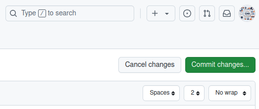
En el campo Mensaje de confirmación, escriba un mensaje de confirmación breve y significativo que describa el cambio realizado en el archivo. Puedes atribuir la confirmación a más de un autor en el mensaje de confirmación.
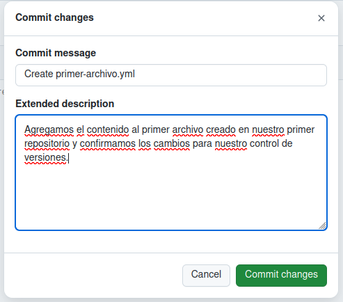
Asi se puede ver luego de realizar commit:
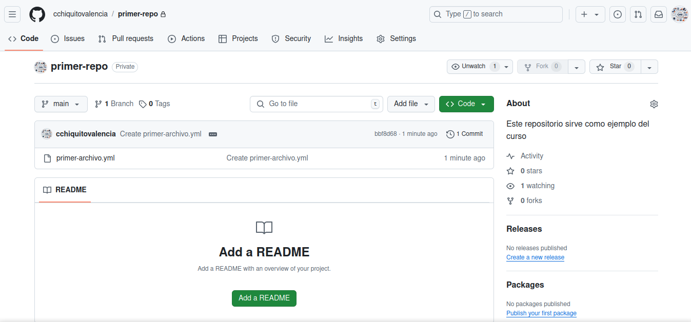
Vamos a crear otro archivo.
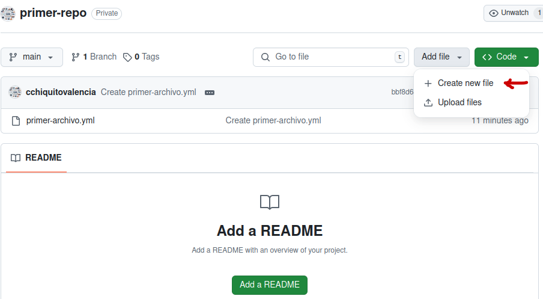
Debajo de los campos de mensaje de confirmación, decida si desea añadir su confirmación a la rama actual o a una nueva rama. Si su rama actual es la rama por defecto, debe elegir crear una nueva rama para su confirmación y, a continuación, crear una solicitud de extracción.
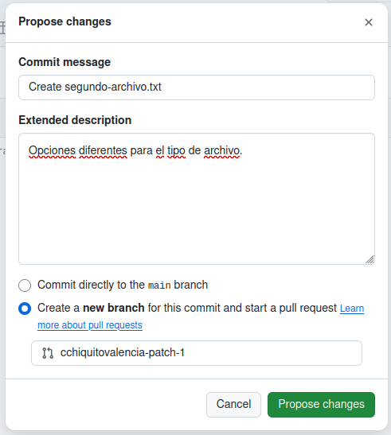
Seleccione Confirmar cambios o Proponer cambios.
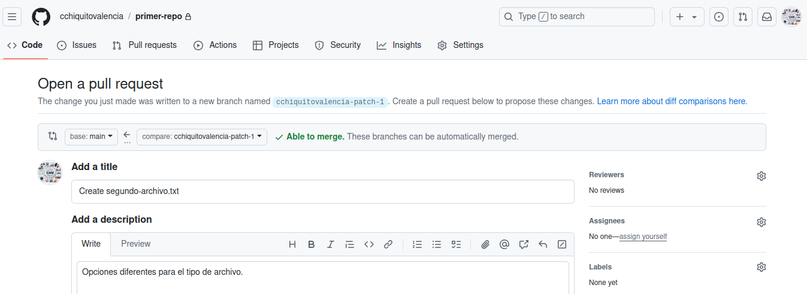
Enhorabuena, ¡acaba de crear un nuevo fichero en su repositorio! También has creado una nueva rama y hecho un commit.
Antes de revisar ramas y commits en la siguiente unidad, vamos a revisar rápidamente gists, wikis y páginas de GitHub porque son similares a los repositorios.
¿Qué son las gists?
Ahora que ya conocemos bien los repositorios, podemos revisar las gists. Al igual que los repositorios, las gists son una forma simplificada de compartir fragmentos de código con los demás.
Cada gist es un repositorio Git, que puedes bifurcar y clonar y que puede ser público o privado. Las gists públicas se muestran públicamente y la gente puede consultar las nuevas a medida que se crean. En las gists públicas también se pueden realizar búsquedas. Por el contrario, las gists privadas no permiten búsquedas, pero no son totalmente privadas. Si envías la URL de una lista secreta a un amigo, éste podrá verla.
Para obtener más información sobre gists, consulte el artículo vinculado en nuestra sección de Recursos al final de este módulo titulado Creación de Gists.
¿Qué son las wikis?
Cada repositorio en GitHub.com viene equipado con una sección para alojar documentación, llamada wiki. Puedes utilizar el wiki de tu repositorio para compartir contenido extenso sobre tu proyecto, como por ejemplo ¿cómo utilizarlo?, ¿cómo lo diseñaste?, o sus principios básicos. Mientras que un archivo README dice rápidamente lo que su proyecto puede hacer, puede utilizar un wiki para proporcionar documentación adicional.
Vale la pena recordar que si su repositorio es privado, sólo las personas que tienen al menos acceso de lectura a su repositorio tendrán acceso a su wiki.
Componentes del flujo de GitHub
En esta unidad, revisaremos los siguientes componentes del flujo de GitHub:
Ramas
Commits
Solicitudes de Pull
El flujo de GitHub
¿Qué son las ramas?
En la última sección, hemos creado un nuevo archivo y una nueva rama en tus repositorios.
Las ramas son una parte esencial de la experiencia GitHub, ya que son donde podemos hacer cambios sin afectar a todo el proyecto en el que estamos trabajando.
Tu rama es un lugar seguro para experimentar con nuevas características o correcciones. Si cometes un error, puedes revertir tus cambios o empujar más cambios para corregir el error. Tus cambios no se actualizarán en la rama por defecto hasta que fusiones tu rama.
Nota
Alternativamente, puedes crear una nueva rama y comprobarla usando git en un terminal. El comando sería git checkout -b nombreNuevaRama
¿Qué son los commits?
En la unidad anterior, añadiste un nuevo archivo al repositorio enviando una confirmación. Repasemos brevemente qué son las confirmaciones.
Una confirmación es un cambio en uno o más ficheros de una rama. Cada vez que se crea una confirmación, se le asigna un ID único y se realiza un seguimiento junto con la hora y el contribuidor. Los commits proporcionan una pista de auditoría clara para cualquiera que revise el historial de un archivo o elemento vinculado, como una incidencia (issue) o pull request.
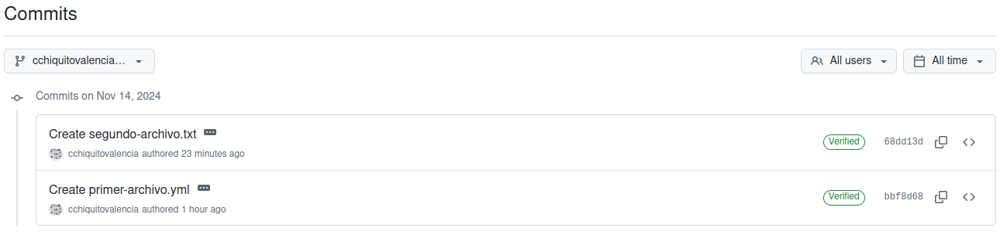
Dentro de un repositorio de Git, un archivo puede existir en varios estados válidos a medida que pasa por el proceso de control de versiones. Los estados primarios de un archivo en un repositorio de Git son No rastreado y Rastreado.
No rastreado: El estado inicial de un archivo cuando no forma parte aún del repositorio de Git. Git no está al tanto de su existencia.
Rastreado: Un archivo rastreado es uno que Git está monitoreando activamente. Puede estar en uno de los siguientes subestados:
No modificado: El archivo es rastreado, pero no ha sido modificado desde el último commit.
Modificado: El archivo ha sido cambiado desde el último commit, pero estos cambios no están aún en la área de staging para el próximo commit.
Staged: El archivo ha sido modificado y los cambios han sido agregados al área de staging (también conocida como el índice). Estos cambios están listos para ser comprometidos.
Commited: El archivo se encuentra en la base de datos del repositorio. Representa la versión más reciente comprometida del archivo.
Estos estados y subestados son importantes para colaborar con tu equipo y saber dónde se encuentra cada y cada commit en el proceso de tu proyecto. Ahora, pasemos a las solicitudes de extracción.
¿Qué son las solicitudes de extracción?
La solicitud de extracción es el mecanismo utilizado para indicar que los commits de una rama están listos para ser fusionados en otra rama.
El miembro del equipo que envía la solicitud de extracción pide a uno o más revisores que verifiquen el código y aprueben la fusión. Estos revisores tienen la oportunidad de comentar sobre los cambios, agregar sus propios o utilizar la solicitud de extracción misma para discusiones adicionales.
Una vez aprobados los cambios (si es necesario), la rama de origen (rama de comparación) se fusiona en la rama base.
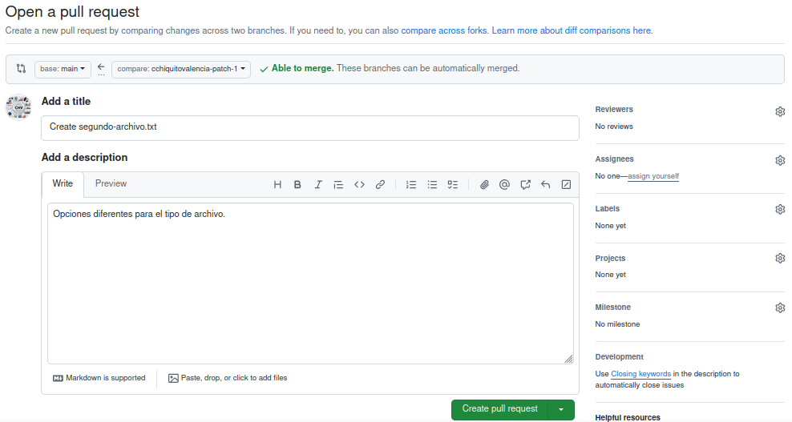
Luego de oprimir Crear pull request nos queda la siguiente pantalla:
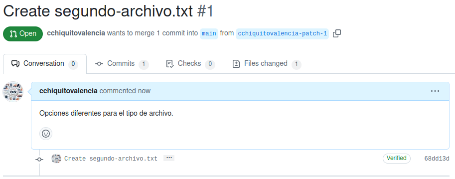
Quiere decir que alguien (para este caso nosotros mismos) quiere fusionar a la rama principal (main) un commit que proviene de la rama cchiquitovalencia-patch-1.
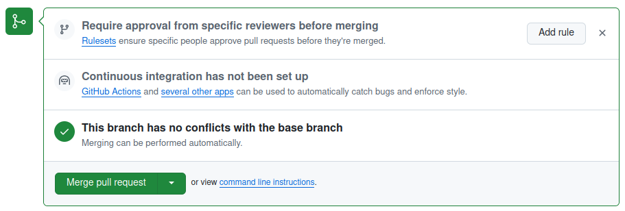
Nos solicita confirmacion de la siguiente forma:
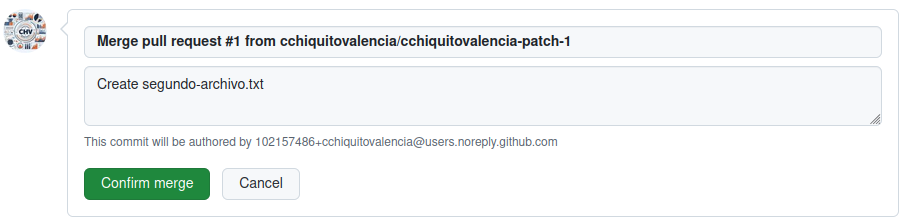
Finalmente llegamos a:
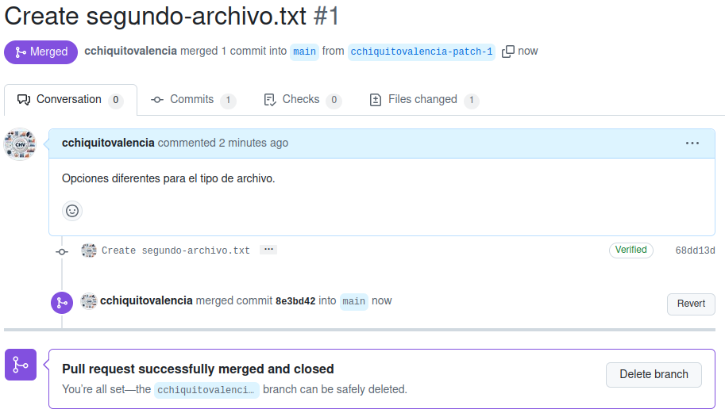
En este punto, luego de haber realizado los cambios en la rama que creamos (no la principal “main”) y confirmado que queremos actualizarlos dentro de la rama original, Github nos dice que es seguro eliminar esa rama, ya cumplio con su cometido.
Antes de hacerlo vamos a nuestro repositorio para ver el estado:
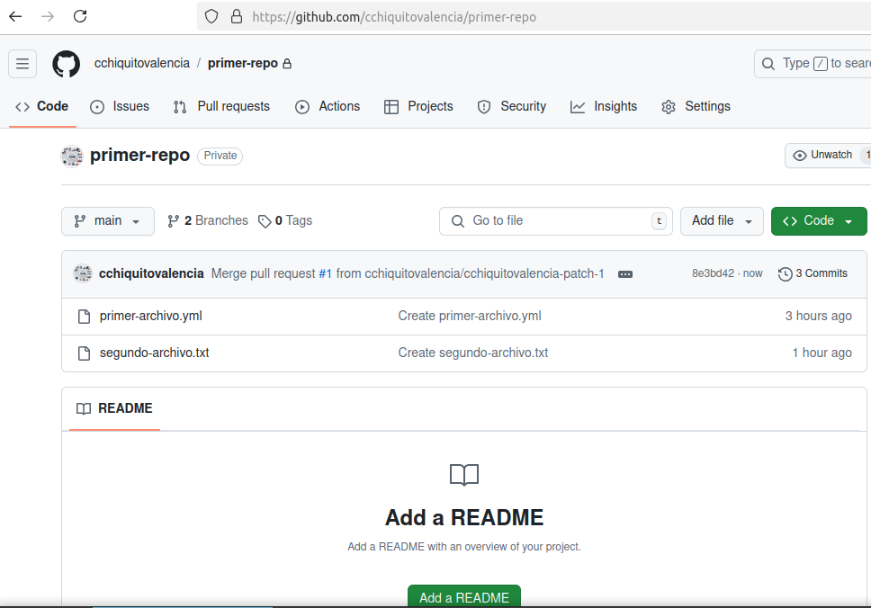
Aqui esta la historia de lo que hemos realizado en cuanto a los commits:
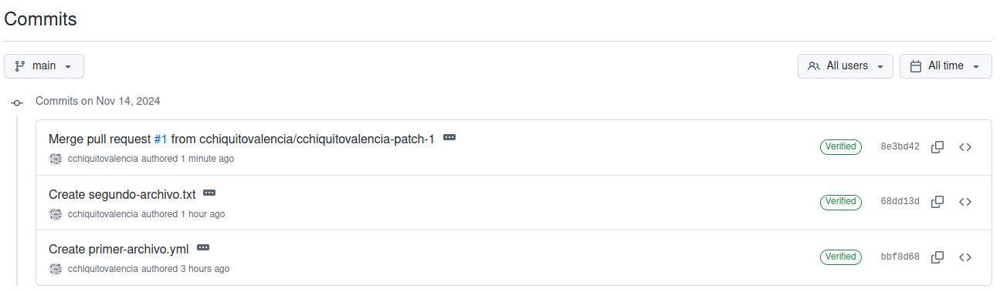
Ahora que conocemos todos los ingredientes, revisemos el flujo de GitHub.
El flujo de GitHub
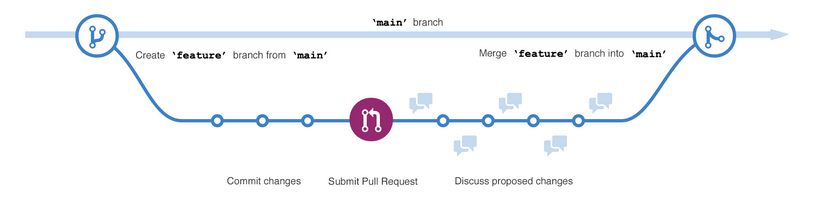
El flujo de GitHub se puede definir como un flujo de trabajo ligero que permite experimentar de manera segura. Puedes probar nuevas ideas y colaborar con tu equipo utilizando ramas, solicitudes de extracción y fusión.
Ahora que conocemos los fundamentos de GitHub, podemos recorrer el flujo de GitHub y sus componentes.
Comienza creando una rama para que los cambios, características y correcciones que creas no afecten la rama principal. A continuación, haz tus cambios. Recomendamos desplegar cambios en tu rama de características antes de fusionar en la rama principal. Al hacerlo, aseguras que los cambios sean válidos en un entorno de producción. Ahora, crea una solicitud de extracción para pedir retroalimentación a tus colaboradores. La revisión de solicitudes de extracción es tan valiosa que algunos repositorios requieren una revisión aprobatoria antes de que las solicitudes de extracción puedan ser fusionadas. Luego, revisa y aplica la retroalimentación de tus colaboradores. Una vez que te sientas satisfecho con tus cambios, es hora de obtener aprobación para tu solicitud de extracción y fusionarla en la rama principal. Finalmente, puedes eliminar tu rama. Eliminar tu rama indica que tu trabajo en la rama está completo y previene que tú o otros utilicen ramas antiguas por error.
¡Eso es todo! Has completado un ciclo de flujo de GitHub.
Vamos a pasar al siguiente apartado, donde cubriremos las diferencias entre problemas (issues) y discusiones (discussions).
GitHub es una plataforma colaborativa
La colaboración está en el núcleo de todo lo que hace GitHub. En el primer unidad del módulo, aprendimos que los repositorios ayudan a organizar tu proyecto y sus archivos. En la última unidad, aprendimos sobre solicitudes de extracción, que es una forma de seguir el progreso de los cambios realizados en tu proyecto.
En este unidad, estamos aprendiendo sobre problemas y discusiones. Estos son dos piezas más que contribuyen a la naturaleza colaborativa de la plataforma de GitHub Enterprise.
Problemas (issues)
Los problemas de GitHub se crearon para rastrear ideas, retroalimentación, tareas o bugs para el trabajo en GitHub. Los problemas pueden crearse de varias maneras, por lo que puedes elegir el método más conveniente para tu flujo de trabajo.
Para este recorrido, vamos a cubrir cómo crear un problema desde un repositorio. Pero los problemas también pueden crearse desde:
Un elemento en una lista de tareas.
Una nota en un proyecto.
Un comentario en un problema o solicitud de extracción.
Una línea específica de código.
Una consulta URL.
Crear un problema desde un repositorio
En GitHub.com, navega hasta la página principal del repositorio.
Debajo de tu nombre de repositorio, selecciona Problemas.
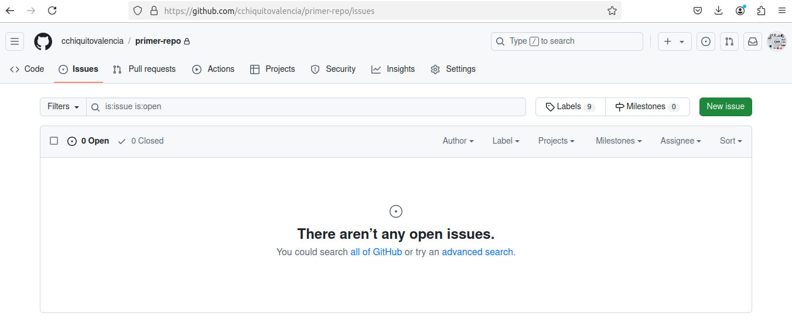
Selecciona Nuevo problema.
Si tu repositorio utiliza plantillas de problemas, a continuación de la tipo de problema que deseas abrir, selecciona Iniciar. Si el tipo de problema que deseas abrir no se incluye en las opciones disponibles, selecciona Abrir un problema en blanco. Si no se utiliza plantillas, omita este paso.
En el campo Agregar un título, ingresa un título para tu problema.
En el campo Agregar una descripción, escribe una descripción de tu problema.
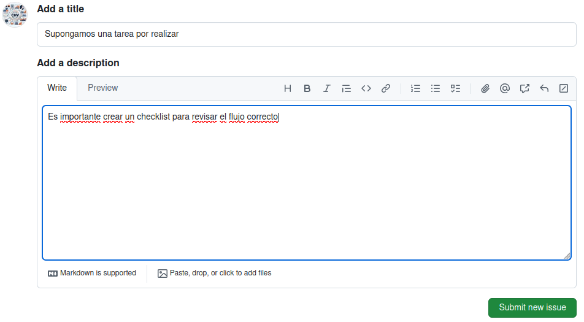
Si eres un mantenedor del proyecto, puedes asignar el problema a alguien, agregarlo a una pizarra de proyecto, asociarlo con un hito o aplicar una etiqueta.
Cuando estés listo, selecciona Enviar nuevo problema.
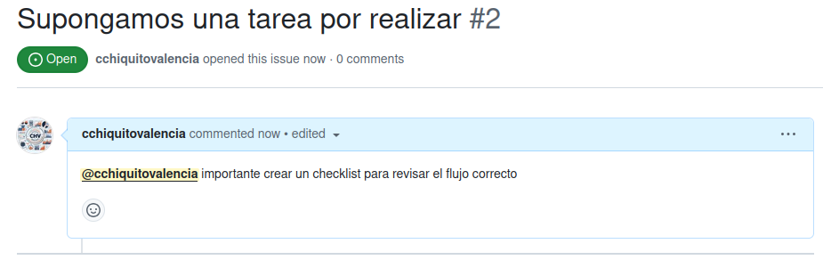
Algunas conversaciones son más adecuadas para GitHub Discusiones. Puedes utilizar GitHub Discusiones para preguntar y responder preguntas, compartir información, hacer anuncios y conducir o participar en conversaciones sobre un proyecto.
En la próxima sección, revisaremos Discusiones y cómo utilizar mejor el recurso.
Discusiones
Las discusiones son para conversaciones que necesitan ser accesibles para todos y no están relacionadas con el código. Las discusiones permiten conversaciones fluidas y abiertas en un foro público.
En esta sección, vamos a cubrir:
Habilitar una discusión en tu repositorio.
Crear una nueva discusión y categorías de discusión.
Vamos a profundizar en habilitar una discusión en tu repositorio.
Habilitar una discusión en tu repositorio
Los propietarios de repositorios y las personas con acceso de escritura pueden habilitar GitHub Discusiones para una comunidad en sus repositorios públicos y privados. La visibilidad de una discusión se hereda del repositorio en el que se crea la discusión.
Cuando habilitas GitHub Discusiones por primera vez, te invitan a configurar un post de bienvenida.
En GitHub.com, navega hasta la página principal del repositorio.
Debajo de tu nombre de repositorio, selecciona Configuración.
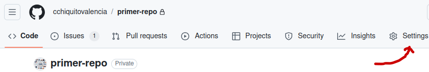
Desplaza el cursor hacia abajo hasta la sección Características y selecciona Configurar discusiones.
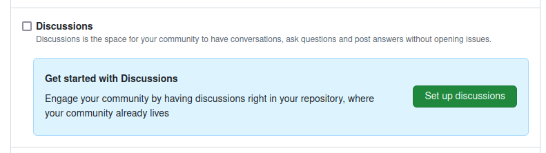
En Iniciar una nueva discusión, edita el plantilla para alinear con los recursos y el tono que deseas establecer para tu comunidad.
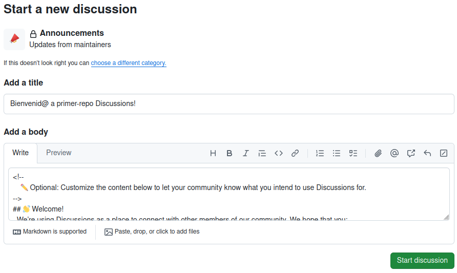
Selecciona Iniciar discusión.
Ahora estás listo para crear una nueva discusión.
Crear una nueva discusión
Cualquier usuario autenticado que pueda ver el repositorio puede crear una discusión en ese repositorio. De manera similar, ya que las discusiones de organización se basan en un repositorio fuente, cualquier usuario autenticado que pueda ver el repositorio fuente puede crear una discusión en esa organización.
En GitHub.com, navega hasta la página principal del repositorio o rganización donde deseas iniciar una discusión.
Debajo de tu nombre de repositorio o organización, selecciona Discusiones.
En el lado derecho de la página, selecciona Nueva discusión.
Selecciona una categoría de discusión al seleccionar Get started. Todos los problemas deben crearse en una categoría. Para las discusiones de repositorios, los mantenidos o administradores del repositorio definen las categorías de discusiones en ese repositorio.
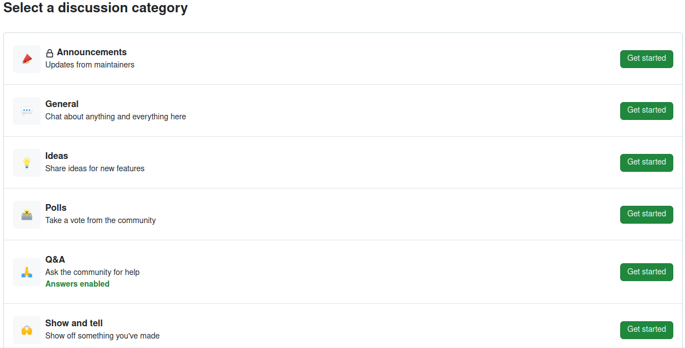
Cada categoría debe tener un nombre único, emparejamiento de emojis y una descripción detallada que explique su propósito. Las categorías ayudan a los mantenidos a organizar cómo se archivan las conversaciones. Están personalizables para ayudar a distinguir categorías que son Q&A o conversaciones más abiertas.
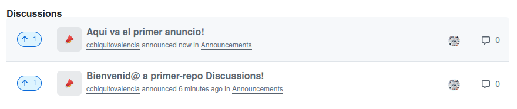
La siguiente tabla muestra las categorías predeterminadas para discusiones y su propósito.
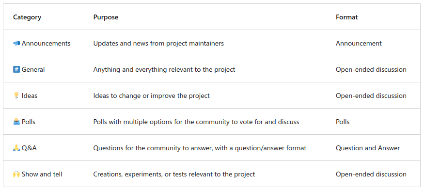
Eso cubre un poco sobre cómo GitHub inspira la colaboración. Ahora, vamos a movernos a cómo puedes administrar notificaciones, suscribirte a hilo y empezar con GitHub Pages.
Gestión de la plataforma de GitHub
Ahora que conoces los fundamentos de la plataforma de GitHub, vamos a explorar algunas estrategias de gestión de la plataforma.
En esta unidad, cubriremos:
Administrar notificaciones y suscripciones.
Suscribirte a hilos y encontrar hilos donde te mencionan.
Publicar tu proyecto o organización en GitHub Pages.
Gestión de notificaciones y suscripciones
Puedes elegir recibir actualizaciones continuas sobre actividad específica en GitHub.com a través de una suscripción. Las notificaciones son las actualizaciones que recibes sobre actividad específica a la que te has suscrito.
Opciones de suscripción
Puedes elegir suscribirte a notificaciones para:
Una conversación en un problema específico, solicitud de extracción o gist.
Actividad de CI, como el estado de flujos de trabajo en repositorios configurados con GitHub Actions.
Problemas, solicitudes de extracción, lanzamientos, alertas de seguridad o discusiones (si se habilitan) en un repositorio.
Todas las actividades en un repositorio.
En algunos casos, te suscribirás automáticamente a conversaciones en GitHub. Ejemplos incluyen abrir una solicitud de extracción o problema, comentar en un hilo o ser asignado a un problema o solicitud de extracción.
Si ya no estás interesado en una conversación, puedes desuscribirte, desatender o personalizar los tipos de notificaciones que recibirás en el futuro.
Si alguna vez estás interesado en problemas que mencionan a un usuario específico, puedes utilizar menciones: como el cuadro para encontrar esos problemas específicos.
¿Qué son GitHub Pages?
Para completar nuestro viaje por GitHub, vamos a abordar GitHub Pages. Puedes utilizar GitHub Pages para publicar y alojar un sitio web sobre ti mismo, tu organización o tu proyecto directamente desde un repositorio en GitHub.com.
GitHub Pages es un servicio de alojamiento de sitios web estáticos que toma archivos HTML, CSS y JavaScript directamente desde un repositorio en GitHub. Opcionalmente, puedes ejecutar los archivos a través de un proceso de compilación y publicar un sitio web. Edita y envía tus cambios, y tu proyecto estará disponible para el público de manera organizada visualmente.
Cómo citar
@online{chiquito_valencia2024,
author = {Chiquito Valencia, Cristian},
title = {Introducción a {Github}},
date = {2024-11-18},
url = {https://cchiquitovalencia.github.io/posts/2024-11-18-intro_github/},
langid = {en}
}